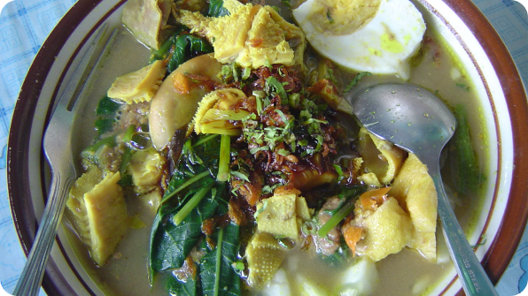

Local Food
Unfortunately, I’m not really into culinary. But one thing for sure, when it comes to culinary, Banyuwangi known for its Rujak Soto. From the name itself you probably already guessed that Rujak Soto is a combination between rujak and soto; and you are correct!
